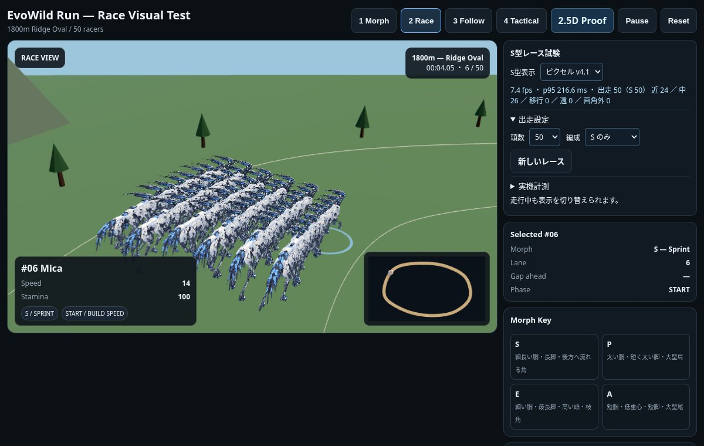
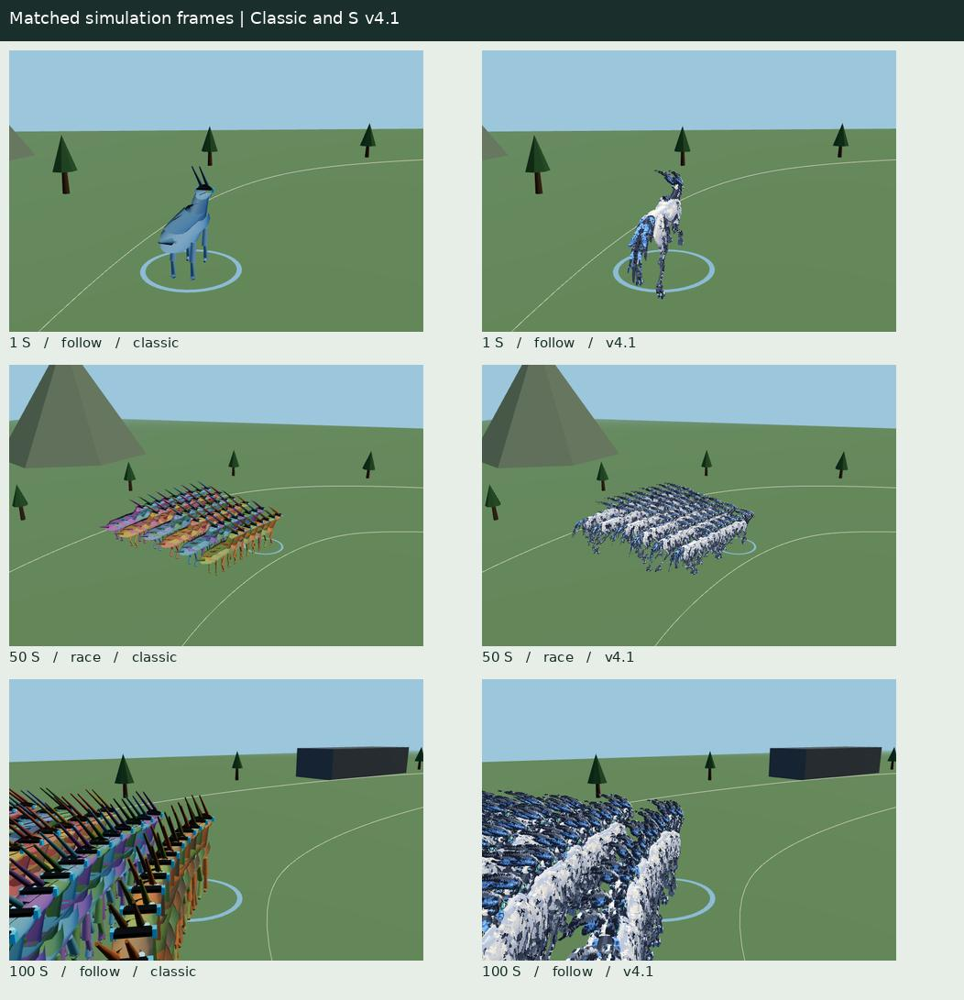
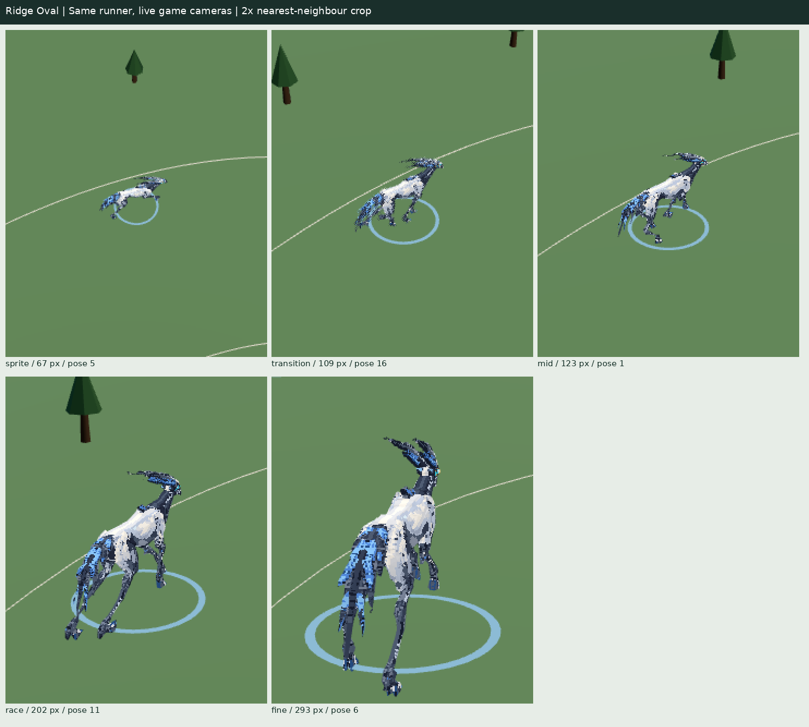

製品採用は保留（REVISE）。 既存ゲームのRidge OvalでS型だけをv4.1に切り替えられる。物理Android・GPU搭載PCの計測は未取得。

1・10・50・100体のS編成と18体混走で、同じ入力・時刻・リセットを通した。7地点の全走行状態、順位、カメラが両表示で一致した。Tacticalでは同一のマーカー画像になった。進路の空き、ブロック、追越しは本体のレーン処理を使用する。

支持脚が同じ姿勢に留まる77組で、接地中の足底の水平ずれはp95 0.0043、最大0.0056本体単位（体長4.092）。最低足底は路面から0.004–0.004。細部メッシュの支持頂点から求めた検算で、姿勢が切り替わる瞬間の滑りは未評価。

近景で頭冠・四脚・尾を確認した。後方視点では脚と尾が重なり、遠景の団子状態では個体間の識別性が落ちる。色・深度スプライトと17色の表面はv4.1以前の既存データを使用した。
ゲームが描いた実時間映像。RaceからFollowへ操作し、ゲーム時計と順位を併記した。
Chromium / ANGLE SwiftShader、736×500、デスクトップ、本体のRaceカメラ、全員S。各条件1回の操作試験。両表示で96時点のカメラ、選択順位・距離・レーンが一致した。表のp95は実時間のRAF間隔。
| 出走数 | 従来 fps / p95 | v4.1 fps / p95 |
|---|---|---|
| 50体 | 5.03 / 266.6 ms | 7.42 / 199.9 ms |
| 100体 | 3.13 / 399.9 ms | 5.03 / 333.3 ms |
展開したZIPのルートで python3 -m http.server 8000 --bind 0.0.0.0 を起動する。PCはlocalhost:8000、Androidは同じWi-FiでPCのLANアドレスのポート8000を開く。
RaceかFollowを選び、「実機計測」で端末名を入力して96フレームを測定し、JSONを保存する。両端末で50・100体の両表示を交互に各3回以上測る。比較画面で同条件を並べ、平均30fpsとp95の33.3ms予算を確認する。持続性能、密集時の識別性、姿勢間の足滑りは未解決。詳細手順と接続点